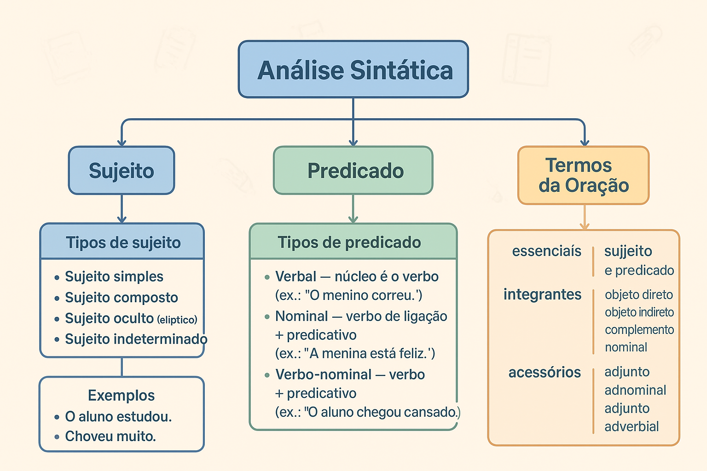

Análise Sintática: sujeito, predicado e termos da oração
A análise sintática estuda as funções que as palavras e as expressões exercem dentro das orações. Por meio dela, identificamos o sujeito, o predicado, os complementos verbais, os adjuntos, os predicativos e outros elementos responsáveis pela organização e pelo sentido dos enunciados.
Esse conteúdo é fundamental para compreender a concordância verbal, a regência, o uso da vírgula e a construção de períodos claros. Também ajuda a interpretar textos, reconhecer ambiguidades e resolver questões de gramática em avaliações escolares, ENEM, vestibulares e concursos.
Neste guia, você aprenderá como realizar uma análise sintática, diferenciar frase, oração e período, identificar os tipos de sujeito e predicado, reconhecer os termos da oração e testar seus conhecimentos em um quiz avançado com gabarito comentado.

O que é análise sintática?
A análise sintática é o estudo das relações estabelecidas entre os termos de uma oração. Ela não se limita a identificar palavras isoladas: procura compreender como essas palavras se combinam e qual função cada uma desempenha no enunciado.
Na oração “Os estudantes atentos resolveram a atividade rapidamente”, por exemplo, cada termo participa da estrutura sintática de maneira diferente.
Análise da oração:
- Os estudantes atentos: sujeito;
- estudantes: núcleo do sujeito;
- os e atentos: adjuntos adnominais;
- resolveram: verbo e núcleo do predicado;
- a atividade: objeto direto;
- rapidamente: adjunto adverbial de modo.
Qual é a diferença entre morfologia e sintaxe?
A morfologia classifica as palavras individualmente, enquanto a sintaxe identifica as funções desempenhadas por elas em uma oração.
Análise morfológica
Identifica a classe gramatical: substantivo, artigo, verbo, adjetivo, pronome, advérbio, preposição, conjunção, numeral ou interjeição.
Análise sintática
Identifica a função: sujeito, núcleo do sujeito, objeto, predicativo, adjunto, aposto, complemento nominal e outras.
Uma mesma classe de palavra pode exercer funções sintáticas diferentes. O substantivo aluno, por exemplo, pode ser núcleo do sujeito, objeto direto, objeto indireto, predicativo ou vocativo, dependendo do contexto.
Para revisar a classificação morfológica, consulte o conteúdo sobre classes de palavras da Língua Portuguesa.
Frase, oração e período são a mesma coisa?
Antes de iniciar a análise sintática, é importante diferenciar três conceitos básicos: frase, oração e período.
| Conceito | Definição | Exemplo |
|---|---|---|
| Frase | Enunciado que transmite uma mensagem completa, com ou sem verbo. | Que manhã agradável! |
| Oração | Enunciado organizado em torno de um verbo ou de uma locução verbal. | Os estudantes chegaram. |
| Período simples | Apresenta apenas uma oração. | A aula começou. |
| Período composto | Apresenta duas ou mais orações. | A aula começou quando o professor chegou. |
Nem toda frase é uma oração
O enunciado “Silêncio!” é uma frase, mas não é uma oração, pois não apresenta verbo. Já “Façam silêncio!” é frase e oração, porque possui a forma verbal façam.
Qual é o ponto de partida da análise sintática?
O verbo é o principal ponto de referência da oração. Por isso, antes de procurar o sujeito ou os complementos, localize os verbos e as locuções verbais presentes no período.
Passos iniciais da análise sintática
- Localize os verbos e as locuções verbais.
- Verifique quantas orações existem no período.
- Analise cada oração separadamente.
- Procure o sujeito e identifique seu núcleo.
- Observe a concordância entre o sujeito e o verbo.
- Analise o predicado e seus núcleos.
- Identifique complementos, predicativos, adjuntos e outros termos.
Não procure o sujeito apenas antes do verbo
O sujeito pode aparecer antes ou depois do verbo. Em “Chegaram os novos estudantes”, o sujeito é os novos estudantes, embora esteja posicionado depois da forma verbal chegaram.
O que é sujeito?
O sujeito é o termo sobre o qual se faz uma declaração e com o qual o verbo normalmente estabelece concordância. Ele pode praticar uma ação, receber uma ação, apresentar um estado ou simplesmente participar da situação expressa pelo predicado.
O sujeito não é necessariamente quem pratica a ação
Em “A atividade foi corrigida pela professora”, o sujeito é a atividade. Ela não pratica a ação: recebe a ação expressa pelo verbo. Quem realiza a ação é pela professora, termo classificado como agente da passiva.
Núcleo do sujeito
O núcleo é a palavra mais importante do sujeito. Em geral, é representado por um substantivo, pronome substantivo, numeral substantivado ou outra palavra empregada com valor de substantivo.
Na oração “Os dois novos estudantes chegaram cedo”, o sujeito completo é os dois novos estudantes, mas seu núcleo é estudantes.
- os: adjunto adnominal;
- dois: adjunto adnominal;
- novos: adjunto adnominal;
- estudantes: núcleo do sujeito.
Quais são os tipos de sujeito?
| Tipo de sujeito | Característica | Exemplo |
|---|---|---|
| Simples | Possui apenas um núcleo. | Os estudantes chegaram cedo. |
| Composto | Possui dois ou mais núcleos. | O professor e os estudantes conversaram. |
| Oculto | Não aparece expresso, mas pode ser identificado pela forma verbal ou pelo contexto. | Estudamos para a prova. Sujeito: nós. |
| Indeterminado | Existe, mas não pode ou não se deseja identificar. | Precisa-se de revisores. |
| Inexistente | A oração apresenta verbo impessoal e não possui sujeito. | Havia muitos candidatos. |
Veja explicações mais detalhadas na página sobre tipos de sujeito e como identificá-los .
Sujeito simples
O sujeito simples possui somente um núcleo. Isso não significa que ele tenha apenas uma palavra.
Sujeito com uma palavra:
Pedro chegou.
Núcleo: Pedro.
Sujeito com várias palavras:
Os novos alunos da escola chegaram.
Núcleo: alunos.
Sujeito composto
O sujeito composto apresenta dois ou mais núcleos relacionados ao mesmo verbo.
“A professora e os estudantes organizaram o evento.”
- Sujeito composto: a professora e os estudantes;
- Núcleos: professora e estudantes;
- Predicado: organizaram o evento.
Sujeito oculto
O sujeito oculto, também chamado de elíptico ou desinencial, não aparece explicitamente, mas pode ser recuperado pela terminação verbal ou pelo contexto.
“Chegamos cedo à escola.”
A desinência da forma verbal chegamos permite identificar o sujeito oculto nós.
Sujeito indeterminado
O sujeito é indeterminado quando existe alguém responsável pelo processo verbal, mas essa identidade não pode ou não precisa ser informada.
Entre as principais estruturas de indeterminação estão:
- verbo na terceira pessoa do plural sem sujeito expresso: “Disseram que a prova será adiada.”;
- verbo na terceira pessoa do singular acompanhado do índice de indeterminação se: “Precisa-se de voluntários.”;
- infinitivo impessoal em determinados contextos: “É necessário estudar com atenção.”.
Oração sem sujeito
A oração sem sujeito apresenta um verbo impessoal, isto é, um verbo que não se refere a nenhum sujeito. Os casos mais frequentes são:
- verbos que indicam fenômenos da natureza: “Choveu durante a madrugada.”;
- verbo haver com sentido de existir ou acontecer: “Há problemas no relatório.”;
- verbo fazer indicando tempo decorrido ou condição climática: “Faz três anos que estudo aqui.”;
- verbo ser em determinadas indicações de tempo: “É uma hora.” e “São duas horas.”.
Vendem-se livros ou precisa-se de funcionários?
Em “Vendem-se livros”, o termo livros é sujeito paciente, e o verbo concorda com ele. O se é partícula apassivadora.
Em “Precisa-se de funcionários”, o verbo exige a preposição de. Nesse caso, o se é índice de indeterminação do sujeito, e o verbo permanece na terceira pessoa do singular.
O que é predicado?
O predicado é aquilo que se declara sobre o sujeito. Ele contém o verbo ou a locução verbal da oração e pode apresentar complementos, predicativos e adjuntos.
Nas orações sem sujeito, não ocorre a divisão entre sujeito e predicado. Toda a informação fica concentrada na estrutura formada pelo verbo impessoal e pelos termos que o acompanham.
Núcleo do predicado
O núcleo é o elemento que concentra a informação mais importante do predicado. Dependendo da estrutura, esse núcleo pode ser um verbo significativo, um nome ou os dois simultaneamente.
Quais são os tipos de predicado?
| Tipo | Núcleo | Estrutura | Exemplo |
|---|---|---|---|
| Predicado verbal | Verbo significativo | Apresenta como núcleo um verbo nocional. | Os alunos resolveram a atividade. |
| Predicado nominal | Predicativo | Geralmente apresenta verbo de ligação e predicativo do sujeito. | Os alunos permaneceram atentos. |
| Predicado verbo-nominal | Verbo e predicativo | Apresenta simultaneamente um núcleo verbal e um núcleo nominal. | Os alunos entregaram a atividade confiantes. |
Predicado verbal
No predicado verbal, o núcleo é um verbo significativo, também chamado de verbo nocional. Esse verbo pode indicar ação, acontecimento, deslocamento, fenômeno ou outro processo.
“Os candidatos responderam às questões.”
- Sujeito: os candidatos;
- Predicado verbal: responderam às questões;
- Núcleo do predicado: responderam;
- Objeto indireto: às questões.
Predicado nominal
O predicado nominal apresenta como núcleo um predicativo, termo que atribui uma característica, estado ou condição ao sujeito. Geralmente, essa relação é estabelecida por um verbo de ligação.
“Os estudantes estavam concentrados.”
- Sujeito: os estudantes;
- Predicado nominal: estavam concentrados;
- Verbo de ligação: estavam;
- Predicativo do sujeito: concentrados;
- Núcleo do predicado: concentrados.
Para aprofundar esse assunto, leia também: verbos de ligação: exemplos e como identificar.
Predicado verbo-nominal
O predicado verbo-nominal possui dois núcleos: um verbo significativo e um predicativo relacionado ao sujeito ou ao objeto.
“Os estudantes deixaram a sala preocupados.”
- Sujeito: os estudantes;
- Predicado verbo-nominal: deixaram a sala preocupados;
- Núcleo verbal: deixaram;
- Núcleo nominal: preocupados;
- Predicativo do sujeito: preocupados.
Confira mais exemplos no conteúdo sobre predicado verbal, nominal e verbo-nominal.
Termos essenciais, integrantes e acessórios da oração
A gramática tradicional organiza os termos da oração em três grupos principais. Essa divisão ajuda a compreender a função desempenhada por cada elemento.
| Categoria | Função geral | Principais termos |
|---|---|---|
| Termos essenciais | Formam a estrutura básica da maioria das orações. | Sujeito e predicado. |
| Termos integrantes | Completam o sentido de verbos ou nomes. | Objetos, complemento nominal e agente da passiva. |
| Termos acessórios | Determinam, caracterizam ou acrescentam circunstâncias e explicações. | Adjuntos adnominais, adjuntos adverbiais e aposto. |
A denominação termos essenciais não significa que toda oração apresente obrigatoriamente sujeito e predicado. Existem orações sem sujeito, como “Há muitas dúvidas” e “Choveu ontem”.
Quais são os termos integrantes da oração?
Objeto direto
O objeto direto completa o sentido de um verbo transitivo direto. Em regra, liga-se ao verbo sem preposição obrigatória.
“A estudante leu o livro.”
A expressão o livro completa o sentido do verbo ler e exerce a função de objeto direto.
Objeto indireto
O objeto indireto completa o sentido de um verbo transitivo indireto e é introduzido por uma preposição exigida pelo verbo.
“Os estudantes precisam de orientação.”
A expressão de orientação é objeto indireto, pois completa o verbo precisar, que exige a preposição de.
A relação entre os verbos e seus objetos é explicada com mais detalhes na página sobre transitividade verbal.
Complemento nominal
O complemento nominal completa o sentido de um substantivo abstrato, adjetivo ou advérbio. Ele é sempre introduzido por preposição.
- “A crítica ao projeto foi severa.” — completa o substantivo crítica;
- “Estamos favoráveis à proposta.” — completa o adjetivo favoráveis;
- “Agiu contrariamente às orientações.” — completa o advérbio contrariamente.
Agente da passiva
O agente da passiva indica quem pratica a ação expressa por um verbo na voz passiva. Geralmente é introduzido pelas preposições por ou de.
“A atividade foi corrigida pela professora.”
- Sujeito paciente: a atividade;
- Locução verbal passiva: foi corrigida;
- Agente da passiva: pela professora.
Predicativo do sujeito e predicativo do objeto
O predicativo atribui uma característica, estado ou condição ao sujeito ou ao objeto.
Predicativo do sujeito
“Os estudantes chegaram cansados.”
Cansados atribui uma característica ao sujeito os estudantes.
Predicativo do objeto
“A comissão considerou a proposta inadequada.”
Inadequada atribui uma característica ao objeto a proposta.
Quais são os termos acessórios da oração?
Adjunto adnominal
O adjunto adnominal acompanha um substantivo para determiná-lo, caracterizá-lo, quantificá-lo ou indicar posse. Artigos, adjetivos, numerais, pronomes adjetivos e locuções adjetivas podem exercer essa função.
“Os meus dois livros novos desapareceram.”
Os termos os, meus, dois e novos são adjuntos adnominais do núcleo livros.
Adjunto adverbial
O adjunto adverbial indica uma circunstância relacionada ao verbo, ao adjetivo ou a outro advérbio. Pode expressar tempo, lugar, modo, intensidade, causa, finalidade, instrumento, companhia, dúvida, negação e outras circunstâncias.
| Circunstância | Exemplo | Adjunto adverbial |
|---|---|---|
| Tempo | Os alunos chegaram ontem. | ontem |
| Lugar | Os alunos estudaram na biblioteca. | na biblioteca |
| Modo | Responderam com atenção. | com atenção |
| Intensidade | A prova estava muito difícil. | muito |
| Finalidade | Estudaram para a avaliação. | para a avaliação |
Veja também o conteúdo sobre advérbios da Língua Portuguesa .
Aposto
O aposto explica, identifica, resume, enumera ou especifica outro termo da oração.
“Machado de Assis, importante escritor brasileiro, nasceu no Rio de Janeiro.”
A expressão importante escritor brasileiro explica quem é Machado de Assis e exerce a função de aposto explicativo.
Vocativo
O vocativo é usado para chamar, invocar ou interpelar o interlocutor. Ele não pertence ao sujeito nem ao predicado e não estabelece relação sintática de dependência com o verbo.
Sujeito:
“João entregou o trabalho.”
João é o sujeito da forma verbal entregou.
Vocativo:
“João, entregue o trabalho.”
João é o interlocutor chamado pelo enunciador.
O vocativo deve ser isolado por vírgula
O deslocamento da vírgula pode alterar a análise e o sentido: “Pedro chegou” apresenta sujeito, enquanto “Pedro, chegue” apresenta vocativo e sujeito oculto você.
Complemento nominal ou adjunto adnominal?
Os dois termos podem aparecer ligados a um substantivo por preposição, mas exercem funções diferentes.
Complemento nominal
Completa o sentido de um nome e geralmente representa o alvo, destinatário ou elemento que recebe a ideia expressa.
“A crítica ao projeto foi severa.”
Adjunto adnominal
Determina ou caracteriza o substantivo e pode indicar agente, posse, origem ou pertencimento.
“A crítica do especialista foi severa.”
Observe quem pratica ou recebe a ideia do substantivo
Em “a crítica do especialista ao projeto”, o especialista realiza a crítica e exerce função de adjunto adnominal. O projeto recebe a crítica e funciona como complemento nominal.
Predicativo ou adjunto adnominal?
O adjunto adnominal acompanha diretamente um substantivo dentro de uma expressão nominal. O predicativo atribui uma característica ao sujeito ou ao objeto por intermédio da estrutura do predicado.
Adjunto adnominal:
“Os estudantes atentos fizeram a prova.”
Atentos integra o sujeito e caracteriza diretamente o substantivo estudantes.
Predicativo do sujeito:
“Os estudantes fizeram a prova atentos.”
Atentos pertence ao predicado e expressa o estado dos estudantes durante a ação.
Como fazer uma análise sintática completa?
Observe a oração:
“Ontem, os estudantes atentos entregaram o trabalho ao professor muito confiantes.”
Análise passo a passo
- Verbo: entregaram.
- Sujeito simples: os estudantes atentos.
- Núcleo do sujeito: estudantes.
- Adjuntos adnominais: os e atentos.
- Predicado verbo-nominal: entregaram o trabalho ao professor muito confiantes.
- Núcleo verbal: entregaram.
- Objeto direto: o trabalho.
- Objeto indireto: ao professor.
- Predicativo do sujeito: confiantes.
- Adjunto adverbial de intensidade: muito.
- Adjunto adverbial de tempo: ontem.
Erros frequentes na análise sintática
| Erro | Por que está inadequado? | Como evitar? |
|---|---|---|
| Procurar apenas quem pratica a ação. | O sujeito também pode sofrer a ação ou apresentar um estado. | Observe a concordância e identifique sobre quem se faz a declaração. |
| Considerar sujeito tudo o que aparece antes do verbo. | O sujeito pode aparecer depois do verbo. | Localize o verbo e verifique com qual termo ele concorda. |
| Classificar toda construção com SE como sujeito indeterminado. | O SE também pode funcionar como partícula apassivadora. | Verifique a transitividade verbal e a possibilidade de voz passiva. |
| Confundir objeto indireto com complemento nominal. | O primeiro completa um verbo; o segundo completa um nome. | Identifique qual palavra exige o complemento preposicionado. |
| Confundir predicativo com adjunto adnominal. | O predicativo pertence ao predicado; o adjunto acompanha um substantivo. | Observe a posição e a relação sintática da característica. |
| Classificar um verbo isoladamente. | A transitividade e a função do verbo dependem do contexto. | Analise sempre o verbo dentro da oração. |
Relação entre análise sintática, concordância e pontuação
A análise sintática ajuda a aplicar corretamente diferentes regras da norma-padrão. Para realizar a concordância verbal, por exemplo, é necessário identificar o núcleo do sujeito. Para empregar a vírgula, é preciso reconhecer termos deslocados, apostos, vocativos e relações entre as orações.
Concordância:
“Os resultados da pesquisa foram divulgados.”
O verbo fica no plural porque concorda com o núcleo do sujeito: resultados.
Pontuação:
“Durante a manhã, os candidatos realizaram a prova.”
A vírgula marca o adjunto adverbial de tempo deslocado durante a manhã.
Para aprofundar essas relações, consulte: concordância verbal e nominal e regras de uso da vírgula .
Como a análise sintática é cobrada em provas?
As avaliações podem solicitar que o estudante:
- identifique o sujeito e seu núcleo;
- classifique os tipos de sujeito e predicado;
- reconheça orações sem sujeito;
- diferencie partícula apassivadora e índice de indeterminação do sujeito;
- identifique objetos diretos e indiretos;
- diferencie complemento nominal e adjunto adnominal;
- reconheça predicativos do sujeito e do objeto;
- explique o uso da vírgula com base na estrutura sintática;
- corrija problemas de concordância;
- avalie mudanças de sentido provocadas pela reorganização dos termos.
Analise relações, não apenas palavras isoladas
Questões avançadas costumam apresentar termos semelhantes exercendo funções diferentes. Antes de classificar uma expressão, identifique a palavra à qual ela se relaciona e o papel desempenhado no sentido da oração.
Quiz sobre análise sintática
Quiz — Sujeito, predicado e termos da oração (nível avançado)
Questão 1 — Na oração “Chegaram cedo os novos estudantes do curso”, qual é o sujeito?
Questão 2 — Em “Faz três meses que não há vagas disponíveis”, as formas verbais faz e há integram:
Questão 3 — Na oração “Vendem-se livros usados”, a análise correta é:
Questão 4 — Em “Precisa-se de revisores experientes”, o termo se funciona como:
Questão 5 — O predicado da oração “Os candidatos saíram confiantes da sala” é:
Questão 6 — Em “A comissão entregou o resultado aos candidatos ontem”, os termos destacados exercem, respectivamente, as funções de:
Questão 7 — Em “A crítica ao projeto foi severa”, a expressão ao projeto exerce a função de:
Questão 8 — Na oração “Leildo, professor de Língua Portuguesa, explicou a regra”, a expressão professor de Língua Portuguesa é:
Questão 9 — Em “Os estudantes atentos permaneceram silenciosos”, os termos atentos e silenciosos são, respectivamente:
Questão 10 — Assinale a análise correta de “Ontem, os avaliadores consideraram a proposta inadequada”.
Resumo de análise sintática
- A análise sintática identifica a função exercida pelos termos na oração.
- A morfologia classifica palavras; a sintaxe analisa suas relações e funções.
- A oração é organizada em torno de um verbo ou de uma locução verbal.
- O sujeito é o termo sobre o qual se faz uma declaração.
- O sujeito pode aparecer antes ou depois do verbo.
- Existem sujeito simples, composto, oculto, indeterminado e oração sem sujeito.
- O predicado pode ser verbal, nominal ou verbo-nominal.
- Objetos completam verbos; o complemento nominal completa nomes.
- O agente da passiva pratica a ação recebida pelo sujeito paciente.
- O predicativo atribui uma característica ao sujeito ou ao objeto.
- Adjuntos adnominais acompanham substantivos.
- Adjuntos adverbiais expressam circunstâncias.
- O aposto explica ou especifica outro termo.
- O vocativo chama o interlocutor e deve ser isolado por vírgula.
- A análise sintática auxilia a concordância, a regência e a pontuação.
Conclusão
Dominar a análise sintática significa compreender como as palavras se relacionam para formar orações claras e coerentes. A identificação do sujeito, do predicado, dos complementos e dos adjuntos permite interpretar melhor os enunciados e aplicar com mais segurança as regras de concordância, regência e pontuação.
O verbo deve ser o ponto de partida da análise, mas não basta perguntar apenas quem pratica a ação. É necessário observar a concordância, a transitividade verbal, a presença de verbos impessoais e as relações estabelecidas entre os termos.
Com a prática, a análise deixa de ser uma simples classificação de palavras e passa a funcionar como uma ferramenta para compreender a construção dos sentidos e melhorar a produção escrita.
Perguntas frequentes sobre análise sintática
O que é análise sintática?
É o estudo das funções e das relações que as palavras e expressões estabelecem dentro das orações.
Qual é o primeiro passo para fazer uma análise sintática?
O primeiro passo é localizar os verbos e as locuções verbais. Depois, deve-se separar as orações e analisar cada uma individualmente.
O sujeito é sempre quem pratica a ação?
Não. O sujeito também pode receber uma ação, apresentar um estado ou ser apenas o elemento sobre o qual se faz uma declaração.
O sujeito sempre aparece antes do verbo?
Não. Em “Chegaram os estudantes”, o sujeito os estudantes aparece depois do verbo.
Toda oração possui sujeito?
Não. Verbos impessoais formam orações sem sujeito, como em “Há muitas dúvidas”, “Faz dois anos” e “Choveu ontem”.
Qual é a diferença entre objeto indireto e complemento nominal?
O objeto indireto completa o sentido de um verbo. O complemento nominal completa o sentido de um substantivo, adjetivo ou advérbio.
Como diferenciar predicativo e adjunto adnominal?
O adjunto adnominal acompanha diretamente um substantivo. O predicativo pertence à estrutura do predicado e atribui uma característica ao sujeito ou ao objeto.
Qual é a diferença entre aposto e vocativo?
O aposto explica ou especifica um termo. O vocativo chama ou interpela o interlocutor e não pertence à estrutura sintática do sujeito ou do predicado.
Como saber se o SE é partícula apassivadora?
Quando acompanha verbo transitivo direto ou direto e indireto e existe um sujeito paciente com o qual o verbo concorda, o SE é partícula apassivadora: “Vendem-se livros”.
Por que a análise sintática ajuda no uso da vírgula?
Porque a vírgula depende da função e da posição dos termos. A análise permite reconhecer vocativos, apostos, adjuntos deslocados e relações sintáticas que não devem ser separadas.
Continue estudando Gramática
- Sujeito e predicado: diferenças e como identificar
- Tipos de sujeito: exemplos e como identificar
- Tipos de predicado: verbal, nominal e verbo-nominal
- Termos essenciais, integrantes e acessórios da oração
- Transitividade verbal: verbos e complementos
- Verbos de ligação: exemplos e como identificar
- Classes de palavras: quais são e como identificar
- Vírgula: regras de uso e exemplos
- Gramática da Língua Portuguesa — página 1
- Gramática da Língua Portuguesa — página 2
- Gramática da Língua Portuguesa — página 3
Referências
- BECHARA, Evanildo. Moderna gramática portuguesa. Rio de Janeiro: Nova Fronteira.
- CEGALLA, Domingos Paschoal. Novíssima gramática da língua portuguesa. São Paulo: Companhia Editora Nacional.
- CUNHA, Celso; CINTRA, Lindley. Nova gramática do português contemporâneo. Rio de Janeiro: Lexikon.
- ROCHA LIMA, Carlos Henrique da. Gramática normativa da língua portuguesa. Rio de Janeiro: José Olympio.
Explore Outros Conteúdos
Continue seus estudos acessando outras seções do site Mestre Kira: